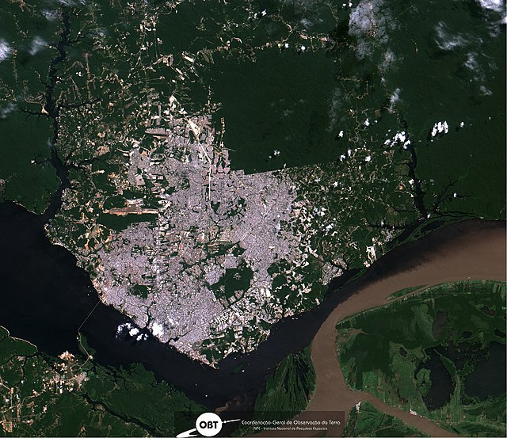

Hello! My name is Art Nagle. I am a recent graduate in Geography from the University of Colorado Boulder. This portfolio highlights my skills utilizing various geospatial and remote sensing software.
Contact Information:
artnagle2001@gmail.com
Phone: (862)-213-4060
This project examines the urban expansion in Manaus, Brazil, using remote sensing technologies to track changes over four decades. It highlights the impact of urbanization on natural ecosystems.
Scroll to view the next project